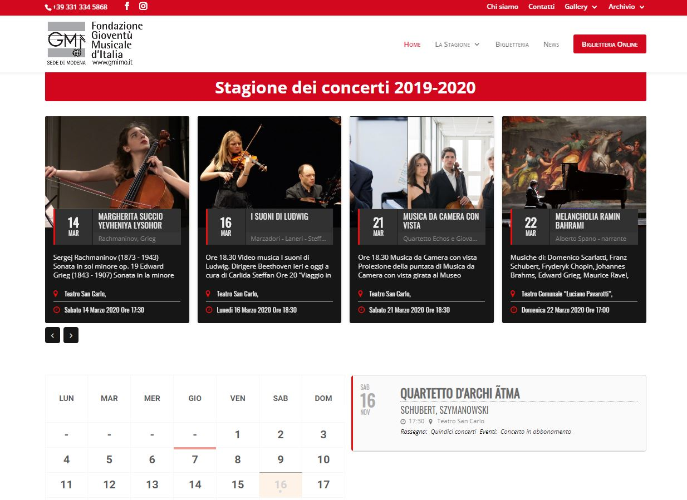

Objective: To have a minimal site that's easy to navigate, functional with all important info immediately available on site.
Details: A group made up of musicians and simple enthusiasts, who have designed and organized exhibitions, monographic cycles, music festivals, for a total - so far - of over 460 concerts of "cultured" music (even if the term sounds like that of "classical" music as is known, its not musically correct), without giving up some foray into other fields such as ethnic music, jazz, etc.